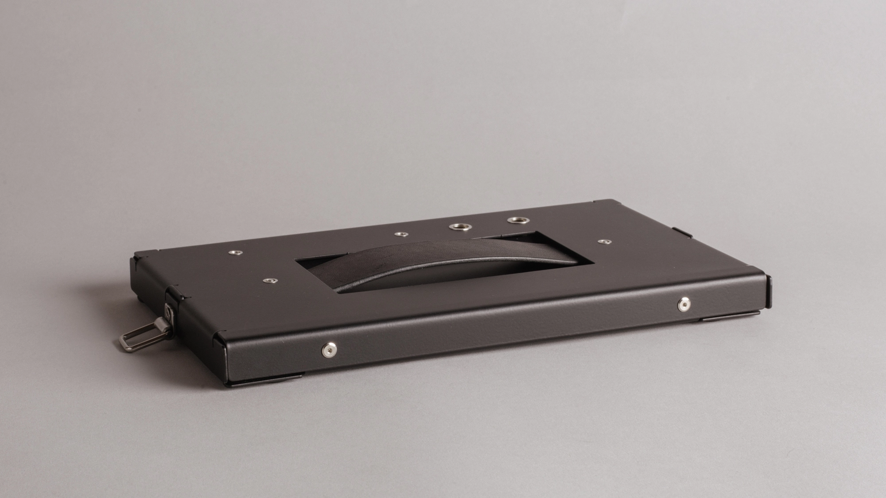
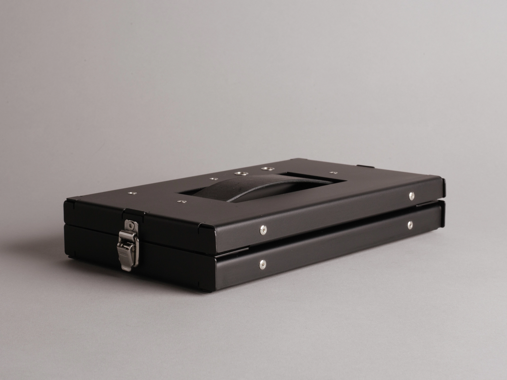
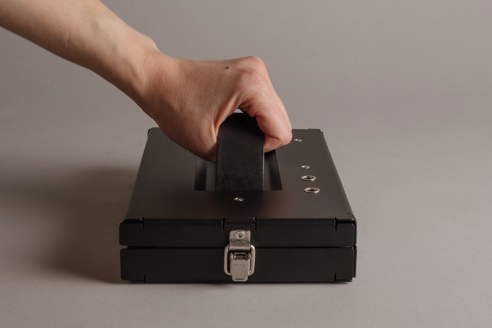
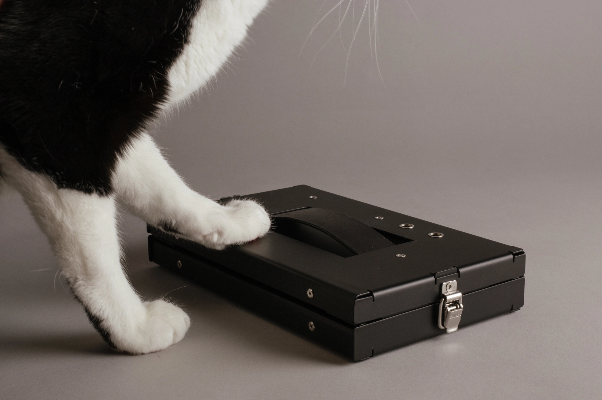
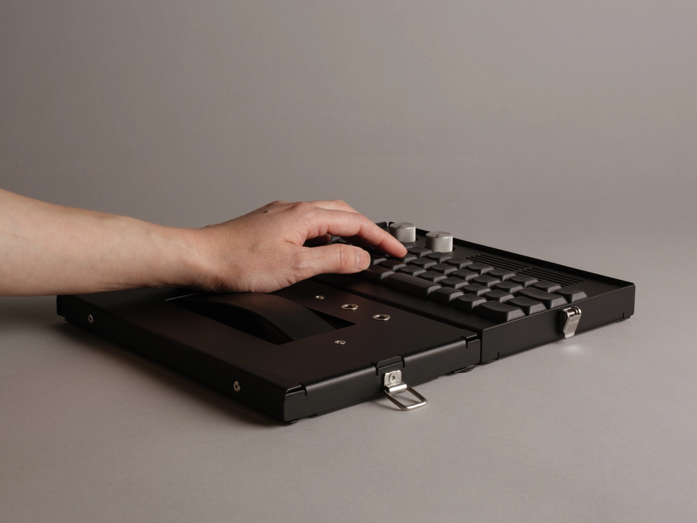
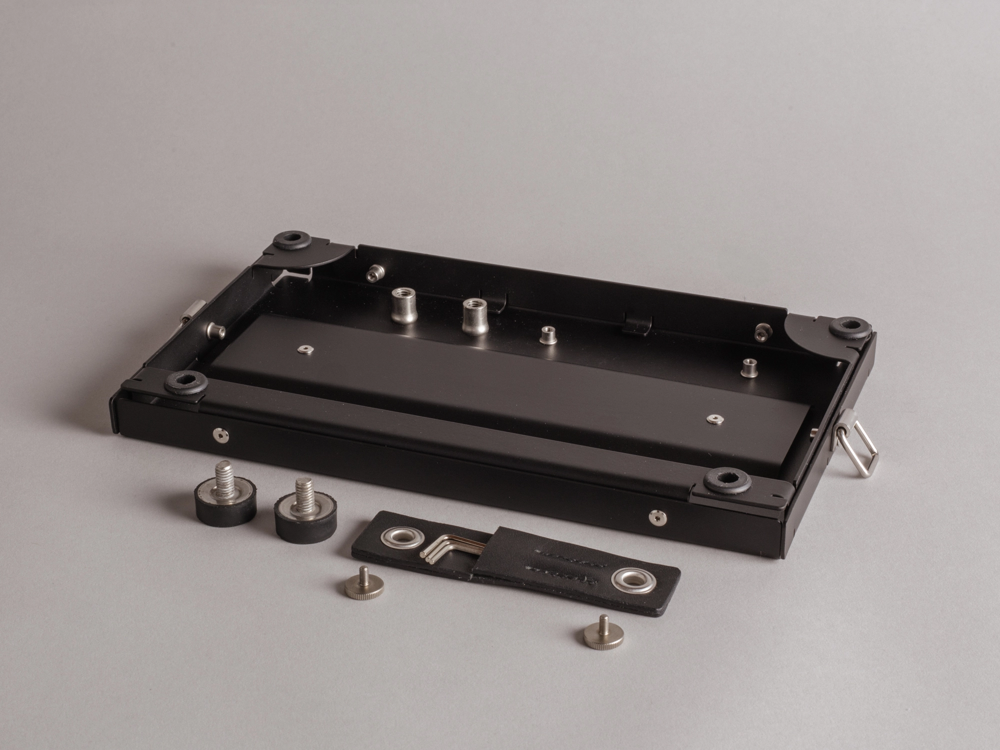

MID.1.LID
Latching Input Deflector
$195
availability
There’s a known, though arguably under-documented, principle surrounding, well, most all objects: everything is better with a lid and a handle. It’s true. Just try to imagine a toolbox without them. Or — or — try to imagine a keyboard with them.
Here you go.
About this thing
The handle


Dublin is a vegetable-tanned leather made by Horween in Chicago. Its finish is on the dull side. It’s soft in the hand and very pliable. The result is a leather that feels like something you’ve lived with for a few years. It’s used here for the strap handle, which tucks into the lid, out of the way when using the lid as a wrist rest. I make the handle in-house.
Why there is a lid

Here's the origin story of the lid. One day, my cat vomited on my keyboard. And here we are. That's it, that's the story.
As a wrist rest

Remember us talking about how flat the screws are? Well, when you use the lid as a wrist rest, there are two screws on top that hold the handle in place and are located exactly where you will inevitably rest your wrists. You can imagine, I’m sure, the discomfort, were these average screws. Awful. These being ultra flat, however, you likely wouldn’t register their presence at all, were it not for the fact that, against the matte black powder coat, they look quite nice.
Anyway, you can use the lid as a wrist rest. How about that?
But can it store things?

Given the overall resemblance of the lidded MID.1 to a toolbox, it would be a shame if you weren't able to store things inside it in some capacity. And so, there's a little storage on the underside of the lid. To one side are sockets for the riser feet when they're not in use. To the other is a small leather tool sleeve, made of the same Horween Dublin, to store the two hex keys used to assemble and disassemble the keyboard. Like the handle, I make it in-house, too.
Specs
What's in the box: MID.1.LID
- powder coated stainless steel case and frame
- fasteners
- feet
- leather strap handle
- leather tool sleeve
- latches (for retrofitting MID.1)
Dimensions
- typing angle
- flat or 4°
- width
- 236 mm (9 5/16")
- length
- 142 mm (5 5/8")
- front height (including feet)
- 21 mm (13/16")
- overall height (to top of case)
- 23 mm (15/16")
- overall height (including knob)
- 32 mm (1 1/4")
- weight
- 985 g (2.17 lbs)
Materials
- bottom and top case
- 304 stainless steel
- plate
- 304 stainless steel
- fasteners
- 304 and 316 stainless steel
- feet and PCB gaskets
- synthetic rubber
- PCB
- standard FR4 with ENIG finish
- packaging
- 100% cardboard and paper, except foil PCB bag
Origin and assembly
- designed by
- A.Okay! in Seattle
- sheet metal
- fabricated in the US (cut, bent, and powder coated)
- PCB
- designed by A.Okay!, fabricated in China
- hardware / electronics
- sourced from US and international suppliers
- leather parts
- cut, sewn, and finished by A.Okay! using Horween leather from Chicago
- packaging
- designed by A.Okay!, manufactured in San Francisco
- print materials
- designed by A.Okay! and printed in Seattle
- final kit prep
- case fastening hardware installed; parts inspected, fit checked, assembled, kitted, and packed by A.Okay! in Seattle